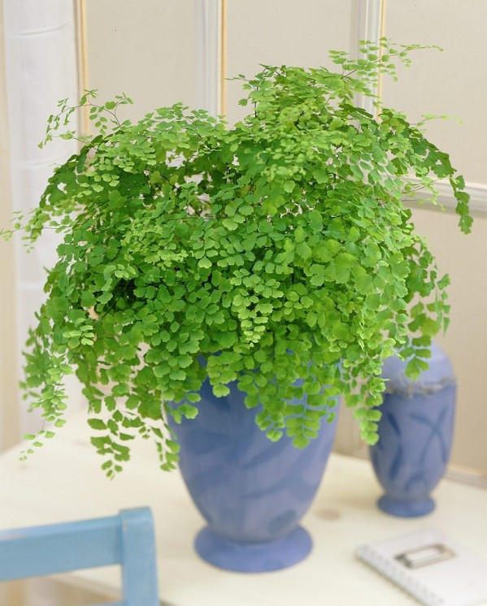
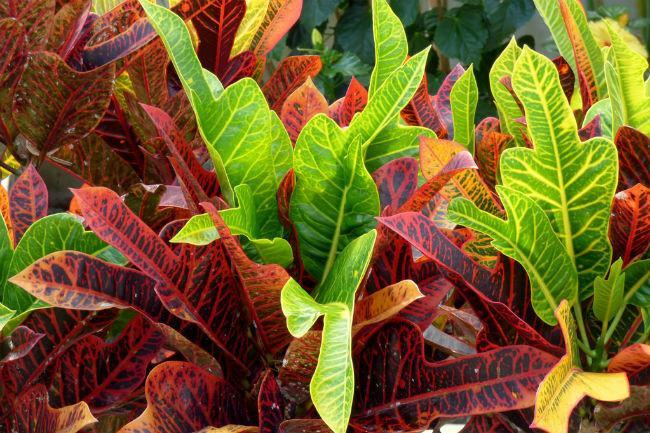

.jpg)
La drácena (Dracaena Marginata, también llamado tronco de Brasil) es una planta que se suele utilizar en las oficinas. La razón de ello es que tiene una gran capacidad para filtrar el humo que producen los cigarrillos, incluso hasta pueden hacer lo mismo con el humo de los tubos de escape, o hasta con los elementos químicos y tóxicos de las pinturas. Es muy estética, por lo que no deberíamos tener ningún problema para adaptarla a cualquier entorno.
La bromelia es una de las mejores plantas para poder cultivar en interiores; y es que la gran mayoría de las especies son capaces de prosperar a la sombra, por lo que no tendremos que estar comprobando en todo momento que recibe luz directa del sol. Esto puede parecer confuso en un primer momento, ya que es una planta tropical y, cómo seguro que ya sabes, las plantas tropicales suelen requerir de acción solar continua. Esta puede crecer a la perfección con tan sólo un poco de luz artificial.
El Crotón es una planta muy colorida, ideal para dar ese punto de color que cualquier estancia puede llegar a necesitar. Se caracteriza por presentar unas elegantes hojas de colores que van desde el rojo hasta el amarillo chillón. Las hojas son grandes y duras, por lo que aguantan a la perfección el paso del tiempo. Aunque sus cuidados no son complicados de seguir, habrá que controlar mucho los cambios bruscos de temperatura. Al mismo tiempo, la planta necesita de mucha iluminación, incluso hasta es capaz de aguantar la luz directa que procede del sol. Se debe de regar de forma continuada, pero evitando que la tierra se pueda llegar a encharcar. Probablemente nos toque pulverizarla de vez en cuando, sobre todo en verano.